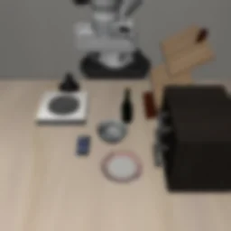

OVERVIEW
摂動が加わっても、ぶつけずに解く
LIBERO のロボット操作タスクを、背景・照明・カメラ視点・物体配置・ロボット初期姿勢・センサノイズといった摂動が加わった状態でも、
周りの物体に衝突せずに解けるようにすることを目標に、LIBERO-Plus で学習済みの VLA OpenVLA-OFT（7B）を、自前で生成したデータでファインチューニングしました。
ここでは、その実装の抜粋と、試行錯誤から得た知見をまとめています。
背景・照明の摂動
90% → 99%
タスク成功率。ファインチューニングなし → あり（100件）
視点・配置・初期姿勢・ノイズの摂動
80% → 84%
タスク成功率。ファインチューニングなし → あり（100件）
学習データ
5,830
エピソード。公開データ＋独自生成・品質改善
ファインチューニングなしとの比較
ベースにした学習済みモデル Sylvest/openvla-7b-oft-finetuned-libero-plus-mixdata をそのまま動かした場合と、
ファインチューニング後のモデル（追加学習 計25,000更新）を、LIBERO シミュレータの同じシナリオ・同じ評価手順で比べました。
衝突は「操作対象以外の物体を1mm超動かしたら衝突」と定義しています。
| 評価セット | モデル | タスク成功 | 衝突なし成功 |
|---|
背景・照明の摂動
30タスク・100件 | ファインチューニングなし | 90 / 100 | 64 / 100 |
| 追加10,000更新 | 96 / 100 | 67 / 100 |
| 追加25,000更新 | 99 / 100 | 70 / 100 |
視点・配置・初期姿勢・ノイズの摂動
30タスク・100件 | ファインチューニングなし | 80 / 100 | 52 / 100 |
| 追加10,000更新 | 76 / 100 | 53 / 100 |
| 追加25,000更新 | 84 / 100 | 60 / 100 |
対象は LIBERO の spatial / object / goal の30タスク。最大300ステップ、128px入力、8ステップ予測・8ステップ実行、評価seed固定。
シナリオは全モデルで同一で、エピソードごとに対応がとれています。背景・照明の摂動では、ファインチューニングなしで失敗し、後で成功したシナリオが10件、逆が1件でした。
やったこと
モデル
- LIBERO-Plus で学習済みの OpenVLA-OFT に LoRA rank 32 を追加し、Action head と proprio projector を学習（ベースモデル）
- 直前3 Actionの履歴入力を、ゼロ初期化した分岐で既存のproprioトークンへ加算（元の出力を壊さずに拡張）
- 8-step × 7次元のAction chunkを予測し、実行長は1/4/8を比較して決定
データ
- LIBERO シミュレータで、物体配置・初期姿勢・カメラ・照明・センサノイズを摂動した成功かつ衝突なしの軌道を生成
- 同じ初期状態のまま軌道を短縮・平滑化し、指標の重みをどう置いても悪化しない改変だけ採用する品質ゲートを設計
MODEL
摂動に強いモデルを、さらに衝突しない方向へ
ベースには、Hugging Face で公開されている Sylvest/openvla-7b-oft-finetuned-libero-plus-mixdata（revision a85655eに固定）を使いました。
OpenVLA を LIBERO 向けに改良した OpenVLA-OFT を、さらに摂動つきのデモで追加学習したモデルです。
ベースモデルの成り立ち
1. OpenVLALlama 2 7Bベースの VLA。約97万軌道でロボットのActionを学習
→
2. OpenVLA-OFTLIBERO の4つのタスク群のデモで、連続値のAction chunkを出すように適応
→
3. LIBERO-Plus で追加学習背景・照明・視点・ノイズなどの摂動を加えたデモでさらに学習（今回のベース）
→
4. 今回のファインチューニング摂動を加えた成功かつ衝突なしの軌道で LoRA を追加学習
1. OpenVLA：画像と言語を読む7Bのモデルに、Actionを「単語」として出させる
OpenVLA は、画像と言語を理解する視覚言語モデル（VLM）を、ロボットの操作データでさらに学習させた 7B パラメータのモデルです。
土台にしている VLM は Prismatic-7B で、次の3つの部品からできています。
画像エンコーダ
DINOv2（自己教師あり学習。物体の形や空間的な位置関係をよく捉える）と SigLIP（画像と言語の対応で学習。物体の意味を捉える）の2つを並列に使い、パッチごとの特徴を連結します。ロボット操作では「何があるか」と「どこにあるか」の両方が要るためです。
言語モデル
Llama 2 7B。画像の特徴は MLP プロジェクタで Llama 2 の単語埋め込みと同じ空間へ変換され、言語指示のトークンと一緒に並べて入力されます。
Prismatic の段階で、画像とテキストの対話データで学習済みです。
Actionの出し方
手先の移動量・回転量・グリッパの7次元を、それぞれ256段階に区切って離散トークンにします（Llama の語彙のうち使われにくい256個を流用）。
モデルは文章を書くのと同じように、7個のトークンを1つずつ生成し、それを連続値に戻してロボットへ送ります。
この VLM を、さまざまなロボット・タスクを集めた Open X-Embodiment の約97万軌道で学習したのが OpenVLA です。
画像エンコーダも含めてモデル全体を更新しています。
2. OpenVLA-OFT：Actionの出し方を、ロボット向けに作り直す
OpenVLA の「1トークンずつ生成する」出し方は、1ステップ分のActionを出すのにLLMを7回動かす必要があり、遅く、細かい連続値も表しにくい。
OpenVLA-OFT（Optimized Fine-Tuning）は、モデル本体はそのままに、入出力と学習の仕方を次のように変えます。
| OpenVLA | OpenVLA-OFT |
|---|
| 入力 | カメラ画像1枚 ＋ 言語指示 | 正面＋手首の画像2枚 ＋ 言語指示 ＋ proprio（ロボットの関節・手先の状態） |
| 出力 | 1ステップ分（7個の離散トークン） | 8ステップ分 × 7次元の連続値（Action chunk） |
| 生成の仕方 | 自己回帰で1トークンずつ（7回） | 空の入力を並べ、1回の推論で全部を並列に出力 |
| 出力層 | LLMの語彙（言語モデルのヘッド） | LLMの隠れ状態から連続値を出す MLPのAction head |
| 損失 | トークンの交差エントロピー | 連続値の L1 誤差 |
| 学習方法 | 全パラメータ | LoRA（rank 32）＋ Action head ＋ proprio projector |
今回使ったモデルは、この方法で LIBERO の Spatial / Object / Goal / Long の4タスク群を1つのモデルとして学習したものが元になっています。
3. LIBERO-Plus で追加学習
LIBERO-Plus は、元の LIBERO のデモを背景・照明・カメラ視点・言語の言い換え・センサノイズ・妨害物などを変えた環境で再生し、成功したものを集めたデータです。
2 の OFT モデルを、このデータで追加学習したのが今回のベースです。配布物に含まれる統計では 14,347 軌道・約224万ステップ・40タスク。
ベースに足りなかったもの
ベースは既に摂動に強く、背景・照明の摂動を加えた100件のうち90件を成功させます。それでも、次の点は学習の対象になっていませんでした。
- ロボットの初期姿勢の変化：LIBERO-Plus は評価には初期姿勢の摂動を含みますが、学習データには入っていません
- 周りの物体との接触：元のデモは「タスクを達成したか」で集められており、非対象物体を動かしたり擦ったりした軌道も含みます
- 新しい物体の追加や、無関係な物体の大きな移動：対象の周りが混み合った配置
そこで、これらの摂動を加えた状態で成功し、かつ非対象物体を動かさない軌道を生成し、それを教師にしてファインチューニングしました（データ）。
モデル名の「OFT+」は LIBERO-Plus で追加学習したことを指します。
出典：OpenVLA、OpenVLA-OFT、LIBERO-Plus、モデルカード。
構成
青枠が今回の学習対象。ベースの重みは凍結し、LoRA・Action head・proprio projectorを学習。出力は [dx, dy, dz, droll, dpitch, dyaw, gripper] の7次元×8ステップ。
推論経路で決めたこと
前処理は1つの関数だけ
LIBEROのカメラ画像は上下左右が反転しているため、front / wrist の両方を180°回転してからモデルへ渡します。
回転・リサイズ・補間を学習ローダと推論サーバで別々に実装すると必ずずれるので、
prepare_libero_camera() を共有し、角に目印を置いた非対称画像をゴールデンテストにしました。
gripperの符号規約を境界で変換
LIBERO生データは -1=開 / +1=閉、OFTの教師は 0=閉 / 1=開。
ローダの境界で g_oft = (1 - g_libero) / 2 と変換し、出力時に逆変換します。データ版ごとに規約を宣言させ、宣言のないデータは読み込みません。
8本予測して、何本実行するか
モデルは常に8ステップ分を予測し、実行長だけを1 / 4 / 8で比較しました。背景・照明の摂動100件でのタスク成功は、実行長1で74件、4で87件、8で96件。
再観測を増やせば修正が効くとは限らず、8ステップをまとめて実行するほうが安定していました。
正規化統計を確実にモデルへ渡す
Action の正規化統計は全タスク共通の1つに固定し、指示文やタスク名で切り替えません。
LoRA で包んだモデルでは外側に設定した統計が内側の推論関数から見えないことがあり、内側のモデルへ直接渡して一致を検査するようにしました。
DATA
「成功した軌道」は、そのまま教師にしない
VLAの性能はほぼデータで決まります。量を増やすより、どの軌道を教えるかに時間を使いました。
すべてのデータ版はIDとmanifestで管理し、元データは上書きせず新しい版として作り直しています。
学習データ
| 枠 | エピソード | 抽出比率 | 中身 |
|---|
| 標準LIBERO成功デモ | 1,040 | 30% | 30タスクの公開デモ。同じ初期状態のまま軌道を短縮・平滑化した改善版を含む |
| 独自生成＋画像変動 | 1,148 | 40% | 物体の個別分散と新規物体、ロボット初期姿勢、実カメラ視点、照明、ノイズ5方式を摂動して生成した成功軌道 |
| robustness / recovery | 3,642 | 30% | 公開データセット（失敗からの復帰を含む）と、摂動を加えた独自の復帰軌道480本 |
| 合計 | 5,830 | 100% | validation 129 / test 144 はエピソード単位で分離。split間の初期状態・軌道の重複0を監査 |
サンプラは「データ源 → タスク → エピソード」の順に階層的に抽出します。エピソード数に比例させると、本数の多いタスクや少数タスクに偏った摂動データへ学習が寄って、元からできていたタスクを忘れるためです。
故意に失敗させた区間は action_loss_mask=0 にし、その後の立て直しのActionだけを教師にしています。
生成した摂動
LIBERO シミュレータの中で摂動を加えた初期状態を作り、そこから成功し、かつ非対象物体を動かさない軌道を生成しました。
下の画像はすべて学習データの最初のフレーム（正面カメラ、128px）です。
物体の分散配置＋新規物体：無関係な既存物体をそれぞれ別の場所へ移し、衝突判定を持つ新しい物体を追加（この例では2個を机の上で大きく移動し、3個を追加）。対象物・置き先・指示文が参照する物体は動かさない。
ロボット初期姿勢：手先の位置を2cm以上ずらした状態から開始。正面からは差が小さいため、手首カメラの画像で比較。
カメラ視点：シミュレータ上のカメラの位置・向き自体を変更（画像の幾何変換ではない）。
カメラ視点（別のシーン）：机の配置が異なるシーンでの例。
照明：明るさ・環境光・色温度を変更。この例では物体の配置変更も同時に入っている。
照明（別のシーン）：暖色寄りに変更した例。新しい物体（緑の箱）も追加されている。
画像のズーム：画像の中心を固定して±10%拡大・縮小。ロボットの動きは元と同じで、見え方だけを変える。
センサノイズ（5方式）

gaussian blurglass blur
カメラ画像にかかるぼけ・かすみを模した5方式。強さはエピソードごとにランダムに選び、エピソード全体に同じ設定でかける（画像は各方式で強めの例）。
- 復帰：上の摂動に加え、途中で故意に手先をずらした後、成功まで立て直す連続軌道も生成（ずらした区間は教師から除外）
採用条件：保存したActionを独立に再生して成功・全ステップで非対象物体の変位1mm以下・280ステップ以内・学習ローダで全フレームをdecodeできること。
指標の重みをどう置いても悪化しない軌道改善
成功して衝突しないことに加えて、短く・滑らかに動く軌道を教えたい。ただ、ステップ数・jerk・SPARC（滑らかさ）・手先の経路長・回転量のどれをどれだけ重視すべきかは一意に決まりません。
そこで、同じ初期状態・同じシーンのまま、待機区間の削除・リタイミング・平滑化などの候補を物理実行し、次をすべて満たす改変だけを採用しました。
- 成功し、全20Hzステップで非対象物体の変位が1mm以下
- 280物理ステップ以内（評価上限300に余裕を持たせる）
- 5指標それぞれを
ref / (ref + cost) で正規化し、各重みを10〜30%（総和1）で動かした最悪ケースでも改善量が 1e-4 を超える
- 保存したActionを別プロセスで再生しても同じ結果になる
最悪ケースの重みは線形計画の端点なので、指標の改善量を並べ替えて貪欲に割り当てるだけで求まります（weight_extreme()）。
| 同じ初期状態のまま改善した54本の平均 | 改善前 | 改善後 |
|---|
| 物理ステップ数 | 121.2 | 114.5 |
| jerk RMS（m/s³） | 7.62 | 6.94 |
| SPARCコスト（小さいほど滑らか） | 2.279 | 2.225 |
| 手先の経路長（m） | 0.830 | 0.815 |
| 手先の回転量（rad） | 1.291 | 1.196 |